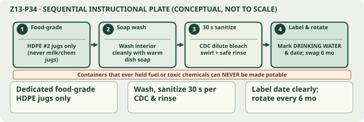

Z13-P34 · Home survival and utilities · New manuscript
Select, sanitize, label, and rotate food-grade household water containers
Prevent bacterial regrowth and plastic-leaching contamination inside reusable home water storage jugs and drums.
When it applies · Households filling reusable water jugs, Jerrycans, or 55-gallon food-grade drums from safe municipal or tested well taps.
Equipment · Unbroken food-grade HDPE/BPA-free water containers, dish soap, unscented household chlorine bleach (per CDC label), and permanent date marker.

Actions
- Use ONLY factory-sealed commercial bottled water OR dedicated, clean, tight-closing food-grade containers (such as HDPE #2 water jugs)—NEVER reuse milk jugs (protein residue degrades and breaks seals), glass jars (shatter risk), or ANY container that ever held fuel, bleach, detergent, or chemicals.[W06, W13]
- Before filling reusable containers with safe water, wash with dish soap and warm water, rinse cleanly, sanitize interior walls per CDC's labeled dilute-bleach rinse protocol (at least 30 seconds contact), and rinse cleanly with safe water before filling and sealing tight.[W13]
- Mark every self-filled container clearly with DRINKING WATER and the fill date, and rotate self-filled tap water every 6 months (and commercial water per manufacturer date).[W14, W13]
Failure recognition · Filling reused plastic milk jugs with tap water and storing them unlabeled in a sunny garage for three years.[W06, W14]
Verify · Confirm food-grade container integrity, completed wash-sanitize-rinse steps, clear fill-date label, and 6-month calendar rotation reminder.[W13, W14]
Stop or change course · Discard cracked, yellowed, foul-smelling, or previously chemical-contact containers immediately—washing cannot remove absorbed toxins.[W06, W13]
Evidence and editorial notes
- W06 · CDC · How to Create an Emergency Water Supply (current web edition)
- Section: How to store emergency water; Safe storage containers · Conditions: Potable water intended for emergency storage
Support: Prefer sealed commercial water or clean food-grade tight-closing containers. Avoid containers that held toxic chemicals.
Limitations: Container shelf durability and rotation depend on plastic/material type and storage heat. · Conflicting evidence: None; reinforces strict raw-vs-clean segregation.
Editorial note: Used to enforce labeling and dedicated raw/potable vessel separation. · Specialist reviewer: Drinking-water safety and public health
Primary source · checked 2026-11-24 - W13 · CDC · How to Create an Emergency Water Supply (current web edition)
- Section: Cleaning and sanitizing a water storage container before use · Conditions: Reusable food-grade water storage containers before filling with potable water
Support: Wash with dish soap and warm water, sanitize interior surfaces with a labeled dilute bleach solution for at least 30 seconds, and rinse with safe water before filling.
Limitations: Damaged, cracked, or chemical-contaminated containers cannot be rehabilitated by washing. · Conflicting evidence: None; complements CDC-S container rules.
Editorial note: Separates routine washing from sanitizing and air-drying/rinsing. · Specialist reviewer: Drinking-water safety and public health
Primary source · checked 2026-11-24
Current assessment · W2C-E045 (2026-11-28) · Partial: part of this claim is not on the cited page: The page supports soap washing, a 1 teaspoon per quart bleach solution and at least 30 seconds of contact, but directs air-drying; it has no rinse after sanitizing. Limits: Z04-P45 now cites W35 and no longer tells readers to rinse after sanitizing. - W14 · CDC · How to Create an Emergency Water Supply (current web edition)
- Section: How Much Water to Store; Rotation · Conditions: Household emergency water reserve planning
Support: Plan at least 1 gallon per person per day for at least 3 days (more for heat, illness, pregnancy, or pets); rotate self-filled water every 6 months.
Limitations: Backcountry active travel demands vary sharply by exertion, temperature, and humidity. · Conflicting evidence: None; household baseline is cited only as a planning floor, not a physiological maximum.
Editorial note: Distinguishes household storage floors from active field hydration demands. · Specialist reviewer: Household preparedness and drinking-water safety
Primary source · checked 2026-11-24
Source lineage · CDC Emergency Water Supply; new manuscript · Classification · New manuscript.